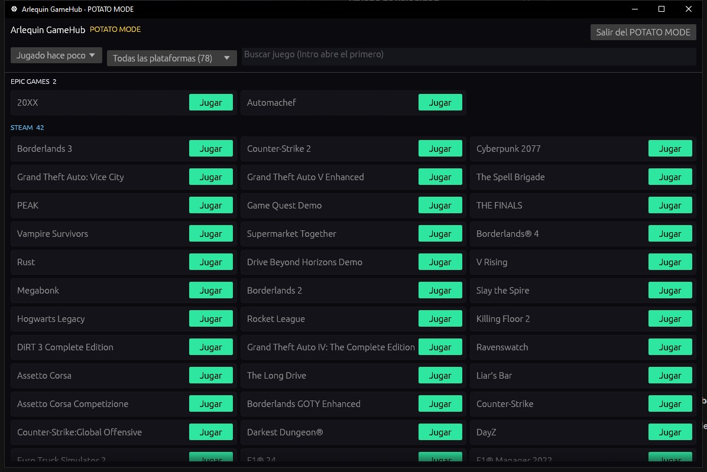

Todo lo que hace GameHub
Cada función, explicada: qué hace y cómo se usa. Las partidas tienen su propia página en SaveHub, y lo que se ve encima del juego, en HUD y mirilla.
Toda tu biblioteca en un sitio
Steam, Epic, GOG, Xbox, Ubisoft, EA, Battle.net, Amazon, Rockstar y los juegos que no tienen launcher, juntos.
GameHub mira lo que ya tienes en tu PC: las carpetas y los archivos que guardan los launchers de cada tienda. Así encuentra tus juegos instalados y también los que tienes comprados pero sin instalar, con sus portadas y las horas que llevas jugadas. Las horas se cuentan aunque abras el juego desde su propio launcher.
En la barra lateral, al pulsar Biblioteca se despliegan tus tiendas con cuántos juegos tienes en cada una (también las que tienen la app instalada aunque aún no tengan juegos). Puedes ordenar por nombre, por última vez que jugaste, por horas o por tamaño, buscar al momento y ver lo que jugaste hace poco.
Los juegos sin launcher (un emulador, un juego de itch.io…) se añaden con el botón «Añadir juego», o le dices a GameHub en qué carpetas tienes juegos sueltos y los encuentra solo. Busca la portada oficial de Steam también para los juegos de otras tiendas, los añadidos a mano y los retirados de la tienda; si no hay ninguna, usa el icono del juego, y siempre puedes ponerle una imagen tuya.
Un juego que tienes en varias tiendas o en la misma carpeta sale una sola vez. Y si Steam está actualizando un juego, lo ves en su tarjeta («Actualizando 45 %» o «Actualización pendiente»).
Si se cuela algo que no es un juego (un programa, un servidor…), lo quitas y GameHub aprende. Lo puedes recuperar en Opciones → Biblioteca.
Nunca te pide la contraseña de ninguna tienda: para jugar, abre cada juego con su propio launcher, como si lo hubieras abierto tú.
Cómo se usa
- Ábrelo y espera unos segundos: tus juegos aparecen solos.
- Doble clic o el botón «Jugar» (abajo de la portada) para abrir un juego.
- «Ver N sin instalar» enseña también los que no tienes instalados.
- «Buscar juegos» vuelve a mirar tus tiendas al momento.
La ficha de cada juego
Todo sobre un juego en un panel: cómo va en tu PC, tus FPS, tus ajustes y tus partidas.
Al pulsar un juego se abre su ficha, en tres pestañas: Resumen (tus horas, la última vez que jugaste, lo que ocupa, los requisitos, tus FPS y tus ajustes gráficos), Partidas guardadas e Información (tus logros, la descripción, la tienda, el estudio, la fecha de salida, dónde está instalado y dónde guarda partida).
¿Corre en mi PC? GameHub conoce tu procesador, tu gráfica y tu memoria, y los compara con los requisitos mínimos y recomendados de cada juego en la tienda de Steam. Verás un semáforo: verde si va sobrado, amarillo si cumple lo mínimo y rojo si no llega. En la biblioteca puedes filtrar para ver solo los juegos que te van sobrados, los que funcionan o los que no llegan.
Y además, cuántos FPS te dará, con un margen («≈ 75 FPS (65-85)») y en cada calidad: Bajo, Medio, Alto y Ultra. Si ya lo has jugado, mandan tus FPS reales (solo los de tu gráfica y procesador de ahora); si no, se calcula con las partidas de la comunidad (si compartes las tuyas o tienes ArlequinPro) o, como aproximación, con los requisitos de Steam.
¿Qué te limita y qué compensa mejorar? GameHub calcula por separado lo que daría tu gráfica y lo que aguanta tu procesador, y te lo dice claro: «Limita la gráfica: un procesador mejor apenas subiría los FPS», o al revés, o que van parejos y habría que mejorar los dos.
También tiene sus partidas guardadas agrupadas (partidas, configuración…), sus copias y botones para abrir su carpeta o instalarlo.
Cómo se usa
- Pulsa cualquier juego de la biblioteca y cambia de pestaña arriba.
- Filtro «En mi PC» en la barra de arriba de la biblioteca.
Cambia los ajustes gráficos de cada juego
Calidad, resolución, modo de pantalla, límite de FPS, VSync… desde GameHub, sin abrir el juego.
GameHub lee los ajustes gráficos que guarda cada juego y te los enseña en su ficha. En los juegos que guardan sus ajustes en un formato conocido, además puedes cambiarlos: los principales (calidad general, resolución, modo de pantalla, límite de FPS y VSync) están a mano, y con «Todos los ajustes» se abre una ventana con todos, agrupados y con buscador.
Entiende los juegos hechos con Unreal Engine (Borderlands 3 y 4, Hogwarts Legacy, THE FINALS…), Unreal Engine 3 (Rocket League, Killing Floor 2…), Unity y Source (Counter-Strike 2…), y además GTA V (clásico y Enhanced), Cyberpunk 2077 y Far Cry 2 a 6.
Antes del primer cambio guarda una copia de cómo estaba todo: con «Volver a como estaba» lo dejas igual que antes. Con el juego abierto no deja cambiar nada (el juego lo sobrescribiría al cerrar) y respeta los archivos de solo lectura.
Cómo se usa
- En la ficha del juego, «Tus ajustes gráficos».
- Cambia lo que quieras y pulsa «Guardar»: se nota la próxima vez que abras el juego.
Tus FPS de verdad
Mide los FPS mientras juegas, sin tocar el juego, y te dice qué te limita.
Con PresentMon, una herramienta gratuita y de código abierto de Intel, GameHub mira desde fuera cuándo dibuja cada fotograma el juego: no inyecta nada, así que no molesta a los anti-trampas. Al cerrar el juego guarda un resumen: FPS medios, mediana, el 1 % más bajo (lo suave que va) y los tirones.
Apunta tus ajustes gráficos de esa partida (calidad, resolución, DLSS/FSR, generación de fotogramas, trazado de rayos, VSync, límite de FPS) y te dice qué limita tu rendimiento: la gráfica, el procesador o un límite de FPS (si iban topados por VSync o por un límite del juego o del driver, lo verás como «Limitado» en vez de culpar al procesador). Y la RAM, la memoria de la gráfica y la memoria virtual que usó el juego, por si se queda corta.
Hemos comprobado que mide bien: con una animación de 360 FPS exactos, GameHub marcó 358,8. Y si quieres verlos mientras juegas, ponlos en el HUD.
Cómo se usa
- Actívalo en la bienvenida o en Opciones → Tu PC (es opcional). Windows te pide un permiso una sola vez y empieza a medir cuando cierras sesión o reinicias.
- Juega un rato y cierra el juego: lo verás en su ficha, en «Tus FPS».
Tu PC, de un vistazo
Tus componentes, tu internet y lo que te falta activar para rendir al máximo.
GameHub te enseña tu procesador, tu gráfica, tu memoria (velocidad, latencia y módulos), tus discos, tus pantallas con sus hercios, tu teclado y tu ratón, y la velocidad de tu internet con una prueba de unos 25 segundos.
Y te avisa de lo que se suele quedar sin activar: si tu memoria va más lenta de lo que pone en su caja porque el perfil XMP (EXPO en las DDR5 de AMD) está apagado en la BIOS, o si tu PC admite Resizable BAR (Smart Access Memory en AMD) y está desactivado. Los dos dan FPS gratis en muchos juegos, y te dice cómo se llaman en la BIOS de cada marca.
Cómo se usa
- Opciones → Tu PC.
- «Medir velocidad» para la prueba de internet (la automática, una vez al mes, no se hace con datos móviles).
Play Hub: para jugar desde el sofá
Una pantalla completa pensada para el mando y la tele.
Con F11 o desde la barra lateral, GameHub se convierte en una interfaz grande para usar con el mando: portadas enormes, el juego elegido de fondo con su información y movimiento suave, de una en una.
Arriba tienes pestañas: «Todos» y una por cada tienda. Cambias de pestaña con L1/R1 (LB/RB en Xbox) y cada una tiene sus filas: Continuar, Más jugados y toda la biblioteca. Al volver a una pestaña sigues donde estabas.
Reconoce mandos de Xbox, PlayStation y Switch y cambia los botones que ves según el que uses (o los que tú elijas). También funciona con teclado (flechas, WASD, Q/E) y con la rueda del ratón. Los juegos sin portada tienen una propia, con su nombre y sus colores.
Cómo se usa
- F11 o «Play Hub» en la barra lateral.
- En Opciones → Mando y Play Hub eliges el estilo de botones.
Chat integrado
Discord, Steam Chat y TeamSpeak al lado de tus juegos.
Abre el chat de cada servicio dentro de GameHub, en un panel que puedes ajustar al ancho que quieras o sacar a su propia ventana. Cada servicio se enciende y se apaga por separado, con su sonido, y con TeamSpeak ves quién está hablando en tu sala.
Además, mientras tienes un juego abierto, tu estado de Discord dice a qué juegas («Jugando a CS2 en Arlequin GameHub») y el tiempo que llevas (se puede quitar en Opciones → Al jugar).
Mientras juegas, el chat puede seguir conectado aunque GameHub cierre su ventana para dejarle todo al juego: lo eliges en Opciones → Al jugar.
Cómo se usa
- Pulsa «Chat» en la barra lateral y elige el servicio.
- Opciones → Chat para elegir servicios y sonidos.
Caja de la suerte
¿No sabes a qué jugar? Que decida la suerte.
Una ruleta al estilo de las cajas de los juegos que elige uno de tus juegos. Puedes elegir entre los instalados o los que no, de qué tienda, y si va por horas jugadas o por logros: los juegos que nunca has abierto son los más fáciles de que salgan, y los que más has jugado, los más raros.
Tienes 5 tiradas al día (sin límite con ArlequinPro).
Cómo se usa
- En la barra lateral, «Caja de la suerte».
POTATO MODE
Para equipos que van justos: GameHub en una ventana nativa ultraligera.
POTATO MODE reinicia GameHub sin su interfaz web (sin navegador por dentro): solo tus juegos y un botón para jugar. Gasta muchísima menos memoria y sigue haciendo las copias de tus partidas y contando tus horas.
POTATO MODE+ (ArlequinPro) va aún más allá: solo el lanzador, sin nada en segundo plano, para que todo el equipo sea para el juego.
Cómo se usa
- Botón «POTATO MODE» en la barra lateral (y «+» para POTATO MODE+).
- En Opciones → Rendimiento puedes hacer que arranque siempre así y elegir en cuál.
- Al abrir un juego, GameHub pasa solo a POTATO MODE (cierra su ventana y el chat para dejarle todo al juego) y vuelve como estaba al cerrarlo. En Opciones → Al jugar eliges si cierra la ventana y si desconecta el chat (por ejemplo, para seguir en una llamada de Discord).

A tu gusto
Temas, idioma y cómo se comporta GameHub.
Elige tema (Arlequin, Medianoche, Oscuro de negro puro o Claro de fondo blanco; con ArlequinPro, también Atardecer y Neón), en español, inglés o chino simplificado. Para equipos con pocos recursos está el modo ligero, que quita animaciones, transparencias y brillos (lo puedes activar ya en la bienvenida).
GameHub puede arrancar con Windows escondido en la bandeja (para contar tus horas y guardar tus partidas aunque juegues desde otro launcher). Se actualiza solo (si te saltas versiones, te enseña juntas todas las novedades) y la primera vez te enseña tus juegos por tiendas para que quites lo que no sea un juego.
Cómo se usa
- Opciones: cada página explica arriba qué se configura en ella.